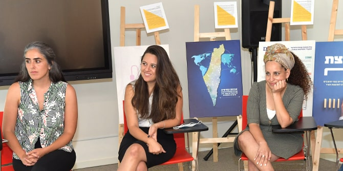
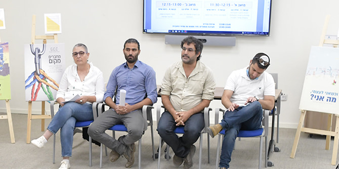

כחלק מאירועי הסיום של מחזור ד' בתוכנית מנדל למנהיגות אזורית בבאר שבע, התכנסו אנשי ונשות סגל מרכז מנדל למנהיגות בנגב, מנחי התוכנית ודמויות רלוונטיות מרחבי העשייה בנגב, כדי ללמוד על שלל הרעיונות שהגו מסיימות ומסיימי התוכנית במסגרת הרכיב המעשי לשם התערבות מיטיבה במציאות.
הרכיב המעשי הוא אחד הצירים המרכזיים בתוכניות הכשרת המנהיגות האזורית של מרכז מנדל למנהיגות בנגב. הוא מגלם חיבור בין תהליכי בירור ערכי, כושר התבוננות במציאות והיכולת לעצב פעולה ממשית באותה מציאות כדי לשנותה לטובה. בכינוס, שנשא את הכותרת "מנהיגוּת והמרחק שבין פוסטר למציאות", ביקשנו ללמוד לא רק על המיזמים אלא גם על העמיתות והעמיתים שהגו אותם ועל התהליך שבו התעצבו.
פתחנו בהרצאה של
פרופ' יורי פינס על התפיסה הסינית קונפוציאנית בשאלת המנהיגות הראויה. לאחר מכן התפזרנו לשיחות בחדרים, ובכל אחד מהם הוצגו כמה פרויקטים. הצגת הפרויקטים לא התנהלה בפורמט פיץ' שגרתי, אלא כשיחה המתקיימת סביב דילמה או סוגיה ערכית-חברתית שליוותה את כל המציגות והמציגים בחדר.

כך, בחדר אחד הוצגו מיזמים שהתמודדו עם שאלת הזכות והחובה למעורבות אזרחית ברשויות מקומיות. בחדר אחר נדונו פרויקטים שעסקו ביחסי הגומלין שבין המקום הפיזי לקהילה. בחדר נוסף – תחת הכותרת "איך משנים מציאות דרך ניווט המנווטים" – הוצגו רעיונות להכשרת מובילות ומובילים חברתיים, ובחדר רביעי למדו הנוכחים על ארבעה פרויקטים נוספים באמצעות שיחה על הזיקות שבין שפה, מודעות ומציאות.
את הכינוס קינחנו בתערוכת פוסטרים שבה, תוך הישענות על אלמנטים גרפיים ויזואליים, הציגו כל עמיתה ועמית את תמצית הרעיון שלהם להתערבות מיטיבה במציאות.
{kind=link}
{kind=link}
{kind=link}